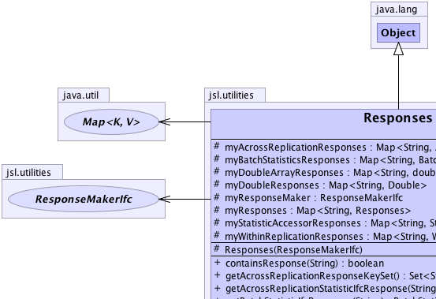
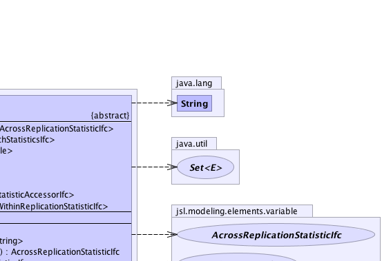
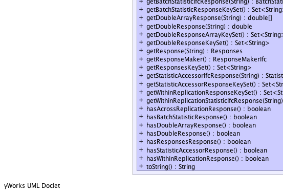
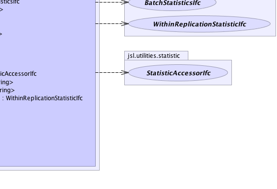

jsl.utilities.Responses
jsl.utilities.Responses
|
||||||||||
| PREV CLASS NEXT CLASS | FRAMES NO FRAMES | |||||||||
| SUMMARY: NESTED | FIELD | CONSTR | METHOD | DETAIL: FIELD | CONSTR | METHOD | |||||||||
java.lang.Object
public abstract class Responses
This class acts like a Map to allow named responses and their associated values to be viewed. Implementors of ResponseMakerIfc are responsible for making instances of this class that are filled appropriately Note: None of the underlying Maps are made. Implementers of sub-classes must create and populate the maps. Attempting to access a map when it has not been created will result in an IllegalStateException. The hasXResponse() methods can be used to check if the response datatype has been defined.
|  |  |
|  |  |
| Field Summary | |
|---|---|
protected java.util.Map<java.lang.String,AcrossReplicationStatisticIfc> |
myAcrossReplicationResponses
The Map that hold the responses as pairs key = name of response value = value of the response as a AcrossReplicationStatisticIfc Not allocated unless at least one response is supplied |
protected java.util.Map<java.lang.String,BatchStatisticsIfc> |
myBatchStatisticsResponses
The Map that hold the responses as pairs key = name of response value = value of the response as a WithinReplicationStatisticIfc Not allocated unless at least one response is supplied |
protected java.util.Map<java.lang.String,double[]> |
myDoubleArrayResponses
The Map that hold the responses as pairs key = name of response value = value of the response as a double[] Not allocated unless at least one response is supplied |
protected java.util.Map<java.lang.String,java.lang.Double> |
myDoubleResponses
The Map that hold the responses as pairs key = name of response value = value of the response as a Double Not allocated unless at least one response is supplied |
protected ResponseMakerIfc |
myResponseMaker
The ResponseMakerIfc that uses the Responses |
protected java.util.Map<java.lang.String,Responses> |
myResponses
The Map that hold the responses as pairs key = name of response value = value of the response as a Responses Not allocated unless at least one response is supplied |
protected java.util.Map<java.lang.String,StatisticAccessorIfc> |
myStatisticAccessorResponses
The Map that hold the responses as pairs key = name of response value = value of the response as a StatisticAccessorIfc Not allocated unless at least one response is supplied |
protected java.util.Map<java.lang.String,WithinReplicationStatisticIfc> |
myWithinReplicationResponses
The Map that hold the responses as pairs key = name of response value = value of the response as a WithinReplicationStatisticIfc Not allocated unless at least one response is supplied |
| Constructor Summary | |
|---|---|
protected |
Responses(ResponseMakerIfc responseMaker)
|
| Method Summary | |
|---|---|
boolean |
containsResponse(java.lang.String key)
Checks if the supplied key is contained in the responses |
java.util.Set<java.lang.String> |
getAcrossReplicationResponseKeySet()
Returns an unmodifiable Set of the response's keys for AcrossReplicationStatisticIfc responses |
AcrossReplicationStatisticIfc |
getAcrossReplicationStatisticIfcResponse(java.lang.String key)
Gets the value associated with the supplied key as a AcrossReplicationStatisticsIfc. |
BatchStatisticsIfc |
getBatchStatisticIfcResponse(java.lang.String key)
Gets the value associated with the supplied key as a BatchStatisticsIfc. |
java.util.Set<java.lang.String> |
getBatchStatisticResponseKeySet()
Returns an unmodifiable Set of the response's keys for BatchStatisticIfc responses |
double[] |
getDoubleArrayResponse(java.lang.String key)
Gets the value associated with the supplied key as a double{]. |
double |
getDoubleResponse(java.lang.String key)
Gets the value associated with the supplied key as a double. |
java.util.Set<java.lang.String> |
getDoubleResponseArrayKeySet()
Returns an unmodifiable Set of the response's keys for double[] Controls |
java.util.Set<java.lang.String> |
getDoubleResponseKeySet()
Returns an unmodifiable Set of the response's keys for Responses |
Responses |
getResponse(java.lang.String key)
Gets the value associated with the supplied key as a Responses. |
ResponseMakerIfc |
getResponseMaker()
|
java.util.Set<java.lang.String> |
getResponsesKeySet()
Returns an unmodifiable Set of the response's keys for Responses responses |
StatisticAccessorIfc |
getStatisticAccessorIfcResponse(java.lang.String key)
Gets the value associated with the supplied key as a StatisticAccessorIfc. |
java.util.Set<java.lang.String> |
getStatisticAccessorResponseKeySet()
Returns an unmodifiable Set of the response's keys for StatisticAccessorIfc responses |
java.util.Set<java.lang.String> |
getWithinReplicationResponseKeySet()
Returns an unmodifiable Set of the response's keys for WithinReplicationStatisticIfc responses |
WithinReplicationStatisticIfc |
getWithinReplicationStatisticIfcResponse(java.lang.String key)
Gets the value associated with the supplied key as a WithinReplicationStatisticsIfc. |
boolean |
hasAcrossReplicationResponse()
Returns true if at least one AcrossReplicationStatisticIfc response has been set |
boolean |
hasBatchStatisticResponse()
Returns true if at least one BatchStatisticIfc response has been set |
boolean |
hasDoubleArrayResponse()
Returns true if at least one double[] response has been set |
boolean |
hasDoubleResponse()
Returns true if at least one Double response has been set |
boolean |
hasResponsesResponse()
Returns true if at least one Responses response has been set |
boolean |
hasStatisticAccessorResponse()
Returns true if at least one StatisticAccessorIfc response has been set |
boolean |
hasWithinReplicationResponse()
Returns true if at least one WithinReplicationStatisticIfc response has been set |
java.lang.String |
toString()
|
| Methods inherited from class java.lang.Object |
|---|
clone, equals, finalize, getClass, hashCode, notify, notifyAll, wait, wait, wait |
| Field Detail |
|---|
protected ResponseMakerIfc myResponseMaker
protected java.util.Map<java.lang.String,java.lang.Double> myDoubleResponses
protected java.util.Map<java.lang.String,double[]> myDoubleArrayResponses
protected java.util.Map<java.lang.String,StatisticAccessorIfc> myStatisticAccessorResponses
protected java.util.Map<java.lang.String,AcrossReplicationStatisticIfc> myAcrossReplicationResponses
protected java.util.Map<java.lang.String,WithinReplicationStatisticIfc> myWithinReplicationResponses
protected java.util.Map<java.lang.String,BatchStatisticsIfc> myBatchStatisticsResponses
protected java.util.Map<java.lang.String,Responses> myResponses
| Constructor Detail |
|---|
protected Responses(ResponseMakerIfc responseMaker)
responseMaker - | Method Detail |
|---|
public ResponseMakerIfc getResponseMaker()
public double getDoubleResponse(java.lang.String key)
key -
public Responses getResponse(java.lang.String key)
key -
public StatisticAccessorIfc getStatisticAccessorIfcResponse(java.lang.String key)
key -
public double[] getDoubleArrayResponse(java.lang.String key)
key -
public AcrossReplicationStatisticIfc getAcrossReplicationStatisticIfcResponse(java.lang.String key)
key -
public WithinReplicationStatisticIfc getWithinReplicationStatisticIfcResponse(java.lang.String key)
key -
public BatchStatisticsIfc getBatchStatisticIfcResponse(java.lang.String key)
key -
public boolean containsResponse(java.lang.String key)
key -
public boolean hasBatchStatisticResponse()
public boolean hasWithinReplicationResponse()
public boolean hasAcrossReplicationResponse()
public boolean hasDoubleResponse()
public boolean hasDoubleArrayResponse()
public boolean hasResponsesResponse()
public boolean hasStatisticAccessorResponse()
public java.util.Set<java.lang.String> getAcrossReplicationResponseKeySet()
public java.util.Set<java.lang.String> getWithinReplicationResponseKeySet()
public java.util.Set<java.lang.String> getBatchStatisticResponseKeySet()
public java.util.Set<java.lang.String> getStatisticAccessorResponseKeySet()
public java.util.Set<java.lang.String> getResponsesKeySet()
public java.util.Set<java.lang.String> getDoubleResponseKeySet()
public java.util.Set<java.lang.String> getDoubleResponseArrayKeySet()
public java.lang.String toString()
toString in class java.lang.Object
|
||||||||||
| PREV CLASS NEXT CLASS | FRAMES NO FRAMES | |||||||||
| SUMMARY: NESTED | FIELD | CONSTR | METHOD | DETAIL: FIELD | CONSTR | METHOD | |||||||||